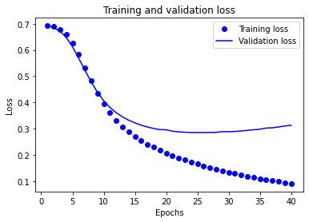
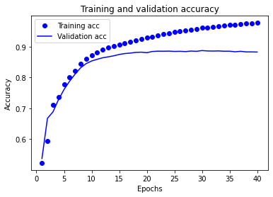

IMDB 評論分類
內容
IMDB 評論分類¶
評論分成 positive 或是 negative 兩類，是一個二元分類問題。
import tensorflow as tf
from tensorflow import keras
imdb = keras.datasets.imdb
# 參數 num_words=10000 保留資料裡面出現最高頻率的 10000 個詞，低頻率出現的被移除
(train_data, train_labels), (test_data, test_labels) = imdb.load_data(num_words=10000)
print("Training entries: {}, labels: {}".format(len(train_data), len(train_labels)))
# show the first data
print(train_data[0])
print(len(train_data[0]))
Training entries: 25000, labels: 25000
[1, 14, 22, 16, 43, 530, 973, 1622, 1385, 65, 458, 4468, 66, 3941, 4, 173, 36, 256, 5, 25, 100, 43, 838, 112, 50, 670, 2, 9, 35, 480, 284, 5, 150, 4, 172, 112, 167, 2, 336, 385, 39, 4, 172, 4536, 1111, 17, 546, 38, 13, 447, 4, 192, 50, 16, 6, 147, 2025, 19, 14, 22, 4, 1920, 4613, 469, 4, 22, 71, 87, 12, 16, 43, 530, 38, 76, 15, 13, 1247, 4, 22, 17, 515, 17, 12, 16, 626, 18, 2, 5, 62, 386, 12, 8, 316, 8, 106, 5, 4, 2223, 5244, 16, 480, 66, 3785, 33, 4, 130, 12, 16, 38, 619, 5, 25, 124, 51, 36, 135, 48, 25, 1415, 33, 6, 22, 12, 215, 28, 77, 52, 5, 14, 407, 16, 82, 2, 8, 4, 107, 117, 5952, 15, 256, 4, 2, 7, 3766, 5, 723, 36, 71, 43, 530, 476, 26, 400, 317, 46, 7, 4, 2, 1029, 13, 104, 88, 4, 381, 15, 297, 98, 32, 2071, 56, 26, 141, 6, 194, 7486, 18, 4, 226, 22, 21, 134, 476, 26, 480, 5, 144, 30, 5535, 18, 51, 36, 28, 224, 92, 25, 104, 4, 226, 65, 16, 38, 1334, 88, 12, 16, 283, 5, 16, 4472, 113, 103, 32, 15, 16, 5345, 19, 178, 32]
218
探勘數據¶
從上述展示可以看到我們訓練集有 25000 筆資料，label 有 25000 種
而第一筆電影評論長度為 218，且都被轉換成數字
然而每則電影評論的長度不盡相同，如下：
print(len(max(train_data, key=len))) # 印出最長訓練評論的 size
print(len(max(test_data, key=len))) # 印出最長測試資料的 size
len(train_data[0]), len(train_data[1]), len(train_data[2])
2494
2315
(218, 189, 141)
而評論的標籤皆為 0 或是 1 的整數值，0 代表負面評論，1 代表正面評論
如下我們展示前 20 筆標籤：
train_labels[0:20]
array([1, 0, 0, 1, 0, 0, 1, 0, 1, 0, 1, 0, 0, 0, 0, 0, 1, 1, 0, 1])
準備數據¶
這裡我們需要先將影評內容的 numpy array 轉換成 tensor，官方文件示範的方法為填充數據來讓每一則評論的長度相同，因為輸入到神經網路的 tensor 必須是相同的長度。這裡使用的方法為用 pad sequences 函數
train_data = keras.preprocessing.sequence.pad_sequences(train_data,
padding='post',
maxlen=256)
test_data = keras.preprocessing.sequence.pad_sequences(test_data,
padding='post',
maxlen=256)
# 經過處理後長度會相同
len(train_data[0]), len(train_data[1]), len(train_data[2])
(256, 256, 256)
print(train_data[0]) # 長度不夠的補 0 補到 256
[ 1 14 22 16 43 530 973 1622 1385 65 458 4468 66 3941
4 173 36 256 5 25 100 43 838 112 50 670 2 9
35 480 284 5 150 4 172 112 167 2 336 385 39 4
172 4536 1111 17 546 38 13 447 4 192 50 16 6 147
2025 19 14 22 4 1920 4613 469 4 22 71 87 12 16
43 530 38 76 15 13 1247 4 22 17 515 17 12 16
626 18 2 5 62 386 12 8 316 8 106 5 4 2223
5244 16 480 66 3785 33 4 130 12 16 38 619 5 25
124 51 36 135 48 25 1415 33 6 22 12 215 28 77
52 5 14 407 16 82 2 8 4 107 117 5952 15 256
4 2 7 3766 5 723 36 71 43 530 476 26 400 317
46 7 4 2 1029 13 104 88 4 381 15 297 98 32
2071 56 26 141 6 194 7486 18 4 226 22 21 134 476
26 480 5 144 30 5535 18 51 36 28 224 92 25 104
4 226 65 16 38 1334 88 12 16 283 5 16 4472 113
103 32 15 16 5345 19 178 32 0 0 0 0 0 0
0 0 0 0 0 0 0 0 0 0 0 0 0 0
0 0 0 0 0 0 0 0 0 0 0 0 0 0
0 0 0 0]
建構模型¶
須考慮你需要多少層的模型，模型每層裡面要有多少 hidden units
# 輸入的詞彙數量為 10000 種最高頻率出現的詞
vocab_size = 10000
model = keras.Sequential([
keras.layers.Embedding(vocab_size, 16),
keras.layers.GlobalAveragePooling1D(),
keras.layers.Dense(16, activation='relu'),
keras.layers.Dense(1, activation='sigmoid')
])
model.summary()
Model: "sequential"
_________________________________________________________________
Layer (type) Output Shape Param #
=================================================================
embedding (Embedding) (None, None, 16) 160000
global_average_pooling1d (G (None, 16) 0
lobalAveragePooling1D)
dense (Dense) (None, 16) 272
dense_1 (Dense) (None, 1) 17
=================================================================
Total params: 160,289
Trainable params: 160,289
Non-trainable params: 0
_________________________________________________________________
2022-04-10 18:51:57.686412: I tensorflow/core/platform/cpu_feature_guard.cc:151] This TensorFlow binary is optimized with oneAPI Deep Neural Network Library (oneDNN) to use the following CPU instructions in performance-critical operations: AVX2 FMA
To enable them in other operations, rebuild TensorFlow with the appropriate compiler flags.
model.compile(
optimizer='adam',
loss='binary_crossentropy',
metrics=['accuracy']
)
創建驗證集¶
先從訓練集分出一些資料來做驗證 validating
測試集要拿來做測試，因為要拿模型沒看過的資料來做測試 testing
x_val = train_data[:10000]
partial_x_train = train_data[10000:]
y_val = train_labels[:10000]
partial_y_train = train_labels[10000:]
訓練模型¶
history = model.fit(
partial_x_train,
partial_y_train,
epochs=40,
batch_size=512,
validation_data=(x_val, y_val),
verbose=0
)
評估模型¶
計算出損失值 loss，以及準確率 accuracy
results = model.evaluate(test_data, test_labels, verbose=2)
print(results)
782/782 - 0s - loss: 0.3336 - accuracy: 0.8722 - 426ms/epoch - 544us/step
[0.3336384892463684, 0.8722000122070312]
創建一個準確率和損失值隨時間變化的圖表¶
model.fit() 有一個 history 的屬性
history_dict = history.history
history_dict.keys()
dict_keys(['loss', 'accuracy', 'val_loss', 'val_accuracy'])
import matplotlib.pyplot as plt
acc = history_dict['accuracy']
val_acc = history_dict['val_accuracy']
loss = history_dict['loss']
val_loss = history_dict['val_loss']
epochs = range(1, len(acc) + 1)
# “bo”代表 "藍點"
plt.plot(epochs, loss, 'bo', label='Training loss')
# b代表“藍色實線”
plt.plot(epochs, val_loss, 'b', label='Validation loss')
plt.title('Training and validation loss')
plt.xlabel('Epochs')
plt.ylabel('Loss')
plt.legend()
plt.show()

plt.clf() # 清除數字
plt.plot(epochs, acc, 'bo', label='Training acc')
plt.plot(epochs, val_acc, 'b', label='Validation acc')
plt.title('Training and validation accuracy')
plt.xlabel('Epochs')
plt.ylabel('Accuracy')
plt.legend()
plt.show()

從上述兩個圖看出大概在 epochs=15 的時候，即可訓練完成，再多可能會進入一個 over-fitting 的狀態。不過官方文件是說 epochs=20。
參考資料
官方文件